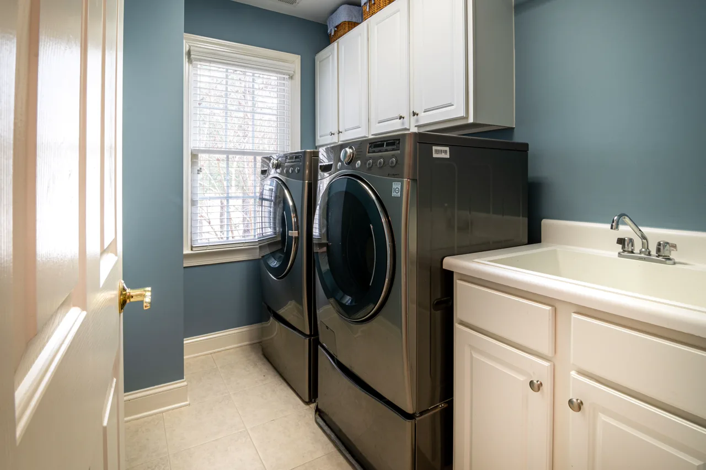

Özel Ölçü Tasarımlar
Banyonuza Özel Ergonomik & Şık Çözümler
Lavabo altı asma üniteler, çamaşır-kurutma gizleme dolapları, boy dolapları ve dokunmatik buğu önleyici aynalar.

Otel Lüksü
İpek Mat Lake Asma Banyo Dolabı
Çok katmanlı poliüretan fırın boyası sayesinde su buharı geçirmez, sararmaz ve banyonuza 5 yıldızlı otel ferahlığı kazandırır.

Maksimum Düzen
Çamaşır & Kurutma Kule Dolabı
Makineleri estetik kapaklar ardında gizleyen, entegre teleskopik kirli sepetli, ütü masası yuvalı ve deterjan hazneli dikey sistem.

Sıcak Spa Dokusu
Ahşap Doku & Çanak Lavabolu Banyo
Doğal ceviz ve meşe desenli neme dayanıklı vakum membran kapak, siyah mat kulp ve mermer desen porselen tezgah harmonisi.